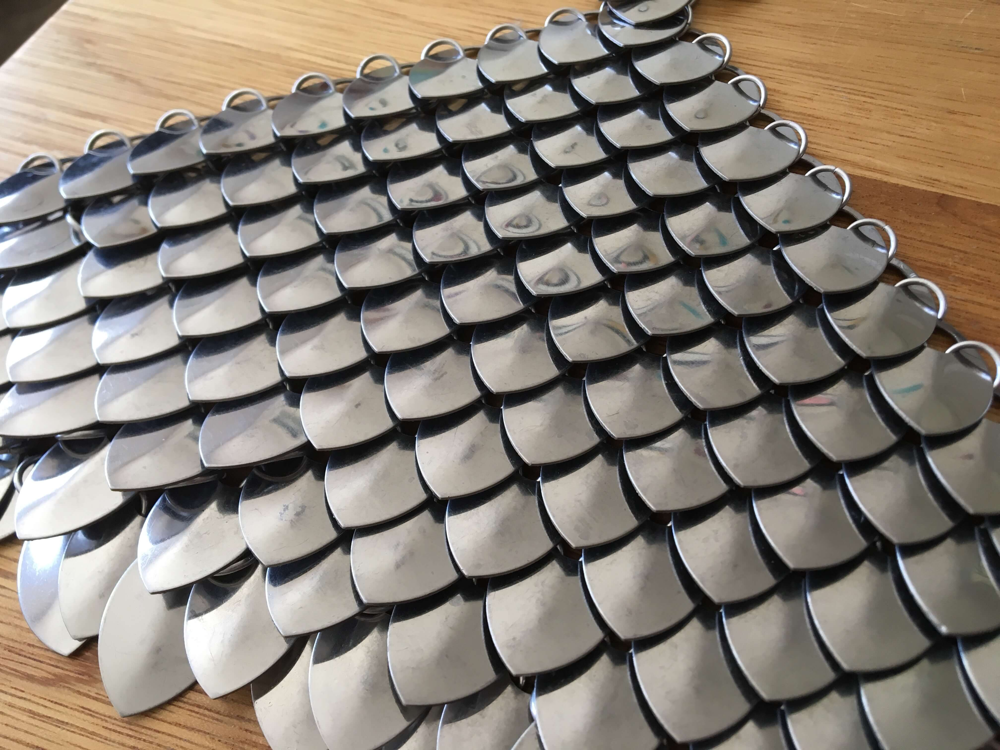
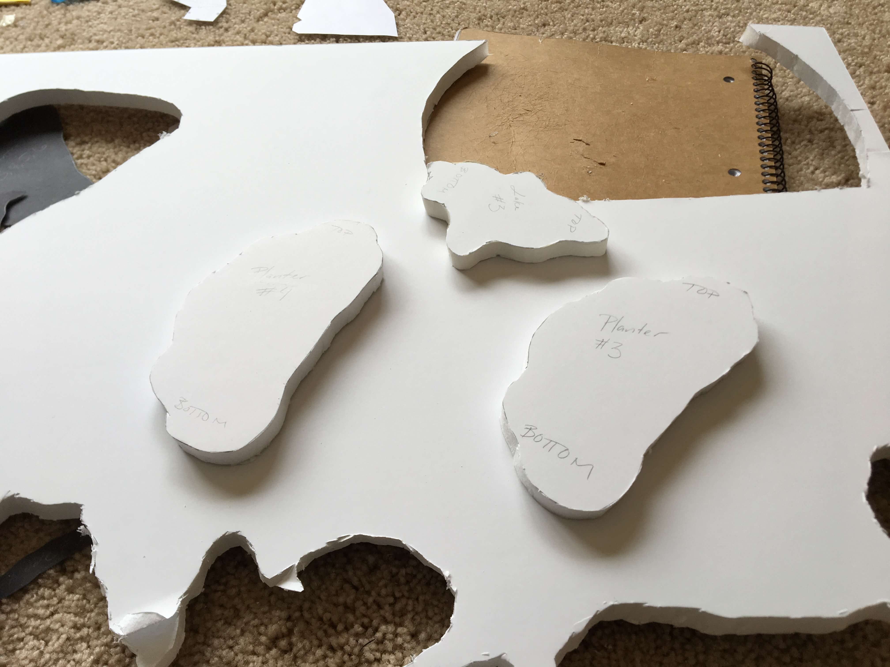
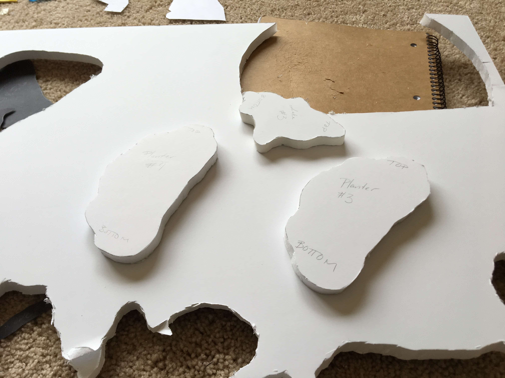
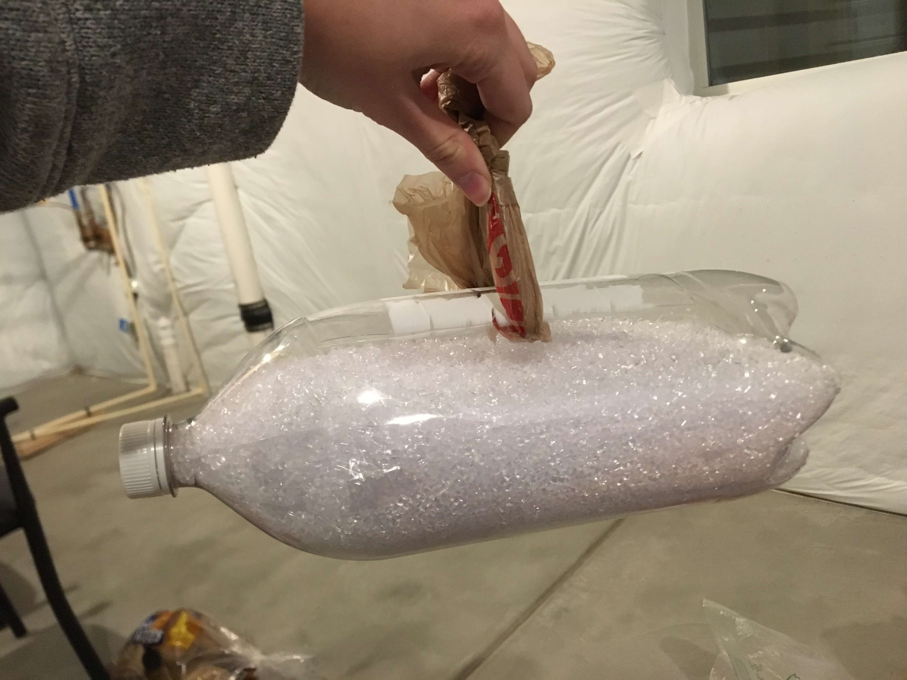

I’ll be honest, I’ve probably been watching a little too much Game of Thrones lately. It could’ve been the dragons, or maybe Brienne getting knighted, or maybe I’ve just always harbored a secret desire to own armor. Whatever the reason, I decided to attempt to make a scalemail top and belt.
Scalemail is like chainmail, but instead of just using metal rings, it’s made up of interlocking metal scales. I’d seen it online before and was curious about it, but never had an excuse to try and actually make something with it. Plus it has that certain cosplay/LARP/overly enthusiastic renaissance festival goer vibe to it that I just wasn’t sure if I really wanted to dive into. Nevertheless, I had a proper excuse to try my hand at it now, so I went about finding the materials I would need for it.
From a little internet searching, apparently the best scalemail supplies you can get come from a website called theringlord. True to form, theringlord uses that iconic Lord of the Rings font for its website.

And down the rabbit hole I went. They have a ton of different size and material options for the scales, everything from bronze and copper to solid sterling silver and even titanium. They have polycarbonate scales too, but what use is plastic armor. I decided to go with the medium size stainless steel scales. Usually steel is less prone to scratches and dents than aluminum, and I definitely wasn’t about to pay 5 times more for the titanium or 24k gold plated scales. I need armor that’s affordable and durable for the many battles I expect to wage after graduating.
Once my scales and rings arrived I needed to actually figure out how to make something with them. As scalemail isn’t the most common hobby, there aren’t a ton of tutorials on how to make it, but thankfully theringlord (the one true king) has some good videos that can get you started. The rest was just looking at pictures and improvising. I found a picture of a scalemail bodice that I liked and that looked somewhat doable on Etsy to use as a reference.

I started with the belt though, because it was much easier and it helped me learn how the scales link together and get familiar with the tools. There are special scalemail tools you can buy, but I settled for stealing some of my dad’s pliers for the job. It was slow work, but I got more efficient as time went on. Soon I felt pretty comfortable working with the scales and rings and the belt was almost done. I bought some chains from Michaels and stole a closure from a keychain I had to finish it off.
Attaching scales in a straight line is one thing, but making a bodice is (as Frontier would say) a whole different animal. Forming the scales into a triangular panel wasn’t too hard, but getting them to fit to a curve was tough. Tailoring scalemail isn’t exactly easy. I had to figure out how to compress a row of scales to make the panel more fitted. I didn’t have different sized scales, so I ended up removing a scale to compress the whole row. I’m not sure it’s the most clean looking on the back, but it seemed to work alright.
Scalemail is tedious work and extremely time intensive. It took more than a few late nights and my roommate thinks I’m even more insane now than when I was mixing concrete in our living room. I didn’t get to do the shoulder pieces because I ran out of scales - and also time - but overall I’m happy with the result. I guess now I’ll have to go to the renaissance festival this summer, because I definitely still can’t stomach LARPing.

Bonus background shakeweight


Embroidery


Weaving
Sketches

Quality IKEA bowl from the thrift store


My extremely high tech way of estimating the curve of the bowl

Figuring out how big each layer can be

Sketching out the shapes of the layers

Cutting out the layers and tracing them onto paper


Tracing onto 1/2 inch foam board and cutting out each layer
 

Taping the edges to make them a little more smooth

Hoping Mold Release will make it easier to get the concrete out of a metal bowl

Ready to start pouring


Took longer than expected - it always does.

Leaving to set for 24 hours

Taking out the foam layers

Didn't have any acetone, but nail polish remover worked pretty well to break down the foam a little
RIP top layer. Broke off when I was pulling out a foam layer

Wish I hadn't taped the edges, the foam is easy to get out but the tape is a pain to remove

I think the concrete wasn't quite wet enough when I poured it, the layers looked a bit chunky and there were a few too many air pockets between the layers. I wet down the edges and went over them with fresh concrete to fill in the gaps. It also helped smooth the edges a bit and covered the pieces of tape I didn't manage to get off

Edges fully covered

Time to try to get the form out of the bowl. Started by turning it over and hitting it with a mallet. Didn't really work and I accidentally cracked off part of the top layer

Realized I could pour hot water over the bowl to make the metal expand and release the form. Worked brilliantly with a satisfying *thunk*

Repairing the cracked layer


RIP living room. Again. My poor roommate.

Going to try to reserect the detatched top layer

It livessss

After letting it set for the night

The planter section ended up being a little closer to the lake than I would've wanted so I added a little more definition to the top 3 layers to separate them a bit more


Don't want the concrete to leach into the soil so I sprayed Waterguard in the planter

We are artists, designers, and makers; we live to create. Our affinity towards creation is nothing new, it’s human nature to build and innovate. Unlike other animals we weren’t born with fur, an armored shell, or razor sharp talons. Soft, pink and squishy our only advantage was an unusually well developed brain. It gave us the ability to make tools, from the first stone arrowhead, to the most sophisticated computing devices we build today. Creating is in our blood, it defines who we are, and it’s the reason we’ve survived this long.
We’ve been lucky, building tools to further our survival isn’t as necessary as it was 10,000 years ago. As we’ve learned and grown we’ve become more efficient. These days most of the manufactured things in our world were formed and built by machines rather than our own hands. Making things with machines is consistent, efficient, and cold. However, the best things in life are not efficient. Perfection is boring. The variation and imperfection of human touch is what gives a piece its soul. That is why craftsmen still matter and why the world still desperately needs them. A machine-made world is homogenous and lifeless. As a society, we need to relearn how to value the quality of the material and the artistry of craftsmanship over a cheap price tag and instant gratification.
Why makers make goes much deeper than the flaws of capitalism or social platitudes. It’s much less defined and varies from person to person. For me there’s a certain magic in willing something into existence with nothing but your hands and the time you are willing to pour into it. Creating is like a form of meditation. The spin of the potter’s wheel, the feeling of sandpaper against wood. Its calming, steadying, to create something step by step, to see the progress as something takes shape. When you make something physical, there’s no delete button. Sometimes mistakes are permanent and starting over can feel like the hardest thing in the world. But you learn from your mistakes and from your material. Making teaches you to be brave when facing uncertainty and persistent in the face of failure. Creating helps define and shape us into the people we were meant to be.
I kept it pretty simple for this project just using a soda bottle, a plastic shopping bag, plastic filler beads, and a few sandwich bags. I remembered my teacher doing a demonstrations in my high school physics class showing how well sand absorbed impact so I decided to see if small plastic beads would act similarly and work for this project.
Without being able to use glue or tape, I figured cutting flaps was probably the best option to be able to get the beads and eggs into the bottle. To make sure the bottle could attach to the zipline hook I cut two holes and threaded a piece of the shopping bag through it and knotted it to create a loop.
Then it was time to put it to the test. I put the eggs in the sandwhich bags to make clean up easy if they broke, having to clean raw eggs off of those beads would've been terrible and the bags added some more padding. I poured half of the beads into the bottle, nestled the eggs in next then poured the rest of the beads in.
I dropped the bottle into a box just in case it was going to explode and send tiny beads everywhere and I taped the openings of the tabs to contain everything. I dropped it pretty hard a few times to simulate the zipline, I wasn't sure if it would be hard enough and it also was dropping straight down instead of hitting at an angle, but I think it was a good test to see how well the eggs would be protected.

All the eggs survived the testing and all the eggs survived the real zipline. It was a simple solution, but I'm glad it was an effective one.
Shoutout to Mr. Shannon for teaching me the physics of sand
I wanted some thinner wood to work with so I went to Home Depot and got some 3/4” x 3’ craft hardwood panels. Originally I wanted to get both a darker wood and a lighter wood to make the smaller triangles, but they didn’t have a darker wood that was the same thickness so I decided to just get two different stains instead.

I thought I would be able to measure and mark where all the triangles would be cut on the panel before I started cutting each panel, but I didn’t take into account that the blade would take off a 16th of an inch with every cut. I needed to measure and mark after each cut to get the triangles to a consistent size. It took me a while to get used to using the chop saw and get consistent cuts. I think I ended up cutting 40 more triangles than I needed just to get enough triangles that were close enough in size to work.

The sides of the small triangles ranged from around 7.1cm - 7.2cm, I grouped them in similar sizes to get big triangles that would fit together well.
I used red mahogany stain for the darker triangles and golden oak stain for the lighter ones. Staining before any gluing or sanding isn’t ideal, but I didn’t think I’d be able to stain them individually once the piece was put together.
I wasn’t sure how to apply even pressure with clamps while gluing the triangles. I figured they weren’t really meant to withstand a massive amount of force so I settled for pressing them tightly together by hand for a few minutes after applying the glue.
Let them dry for 24 hours before taking them into the BTU lab to get their edges mitered.
I thought about using the band saw to cut the edges, but in the end the sander seemed like the safer option. It was set to 21 degrees and Caleb helped me measure the sanded edges to make sure they were right, but I guess I wasn’t patient enough or maybe 21 degrees isn’t the correct angle.
I did my best to match up similarly sized large triangles, taped them together and then tried to glue them all together. When I tried to do 4 at a time it felt like I didn’t have enough hands to keep everything at the right angle and pressed together, so I started doing 2 at a time and then adding on once they’d dried a little. I think that might be where things went wrong. If I’d been able to glue 4 together at once it would’ve been easier to make sure they would match up properly. I was just trying to make sure the seams on each pair were lined up and flat, but the variations in the edges compounded so that in the end the pieces didn’t fit together properly.
I was just using tape and my hands to hold the pieces in place, I think if I’d had time to build a jig or other assists the pieces might’ve come together better.

After some sleep and some cake, I’m not entirely unhappy with how it turned out. I think it still looks interesting even if it’s not technically a platonic solid. I sanded and stained the exposed edges and now I’m trying to decide if I want to turn it into a lamp or not.